Как читать авторский курс и нормативные материалы
Это учебные материалы, а не заключение о соответствии конкретного продукта. Организационные модели курса отделяйте от терминов стандарта: ППК в опубликованном проекте — машиночитаемый перечень, а живой реестр его версий является практикой сопровождения. Термин OSA в разных материалах имеет разный охват. Статус и обязательность нормативного документа проверяются отдельно; проект КАПО опубликован как проект первой редакции.
М06. Поиск уязвимостей и управление VDR/VEX
О чём модуль Готовый SBOM сам по себе не содержит ни одной уязвимости — он описывает только состав. Уязвимости появляются в момент сопоставления координат компонента (PURL/CPE/версия) с базами CVE. Этот модуль учит превращать SBOM в управляемый поток находок: получить VDR (список фактов «такая-то CVE затрагивает такой-то компонент»), а затем для каждой находки принять VEX-решение (затронут продукт реально или нет, кто как производитель это утверждает и чем подтверждает).
Зачем этот модуль
Между «сканер нашёл 142 CVE» и «нам нужно срочно патчить» лежит триаж. Без него команда либо тонет в шуме (большинство находок не эксплуатируемы в данном контексте), либо пропускает реальный риск. Модуль разделяет два артефакта, которые на проектах часто путают:
- VDR (Vulnerability Disclosure Report) — машинный факт: компонент X версии Y связан с CVE-Z. Источник — сканер.
- VEX (Vulnerability Exploitability eXchange) — человеческое решение о применимости:
not_affected/affected/fixed/under_investigation, с обоснованием, владельцем и сроком.
Карта связей

Материалы модуля
- 01 Конспект — теория: сканеры, VDR vs VEX, состояния, источники, SLA.
- 02 План занятия — тайминг занятия на 90 минут.
- 03 Практическая работа — Grype + OSV-Scanner + Dependency-Track, оформление VEX.
- 04 Контрольные вопросы — проверка понимания + кейсы.
- 05 Что проверять на проекте — чек-лист аудитора.
- VEX в процессе РБПО: откуда берется и как выпускать — обязательная справка: кто выдает VEX, как проходит triage, какие evidence нужны и где хранить VEX.
Связь с другими модулями
- М04. Идентификаторы — без качественных PURL/CPE сопоставление с CVE не работает (это вход для М06).
- М05. Генерация SBOM — SBOM, который мы здесь сканируем, приходит из М05.
- М08. Цепочка поставки и OSA — VEX-обмен с соисполнителями.
Практики модуля
П06. Grype поверх готового SBOM · П07. OSV-Scanner и lockfiles · П08. Dependency-Track как портфель SBOM · П09. VDR и VEX различие факта и решения · П10. БДУ ФСТЭК как национальный источник · П35. VEX triage
Перед П09 слушатель читает VEX в процессе РБПО, чтобы отличать VEX как утверждение производителя от внешнего vulnerability feed. Перед П35 та же справка используется как критерий качества evidence.
Нормативная опора
NIST SP 800-218 SSDF (RV.1/RV.2) · БДУ ФСТЭК · CycloneDX ECMA-424 (VEX-расширение) · OWASP SCVS
Шаблоны
Политика управления уязвимостями компонентов · Порядок загрузки VDR из Dependency-Track · Регламент ретеста после исправления · Порядок обновления БДУ